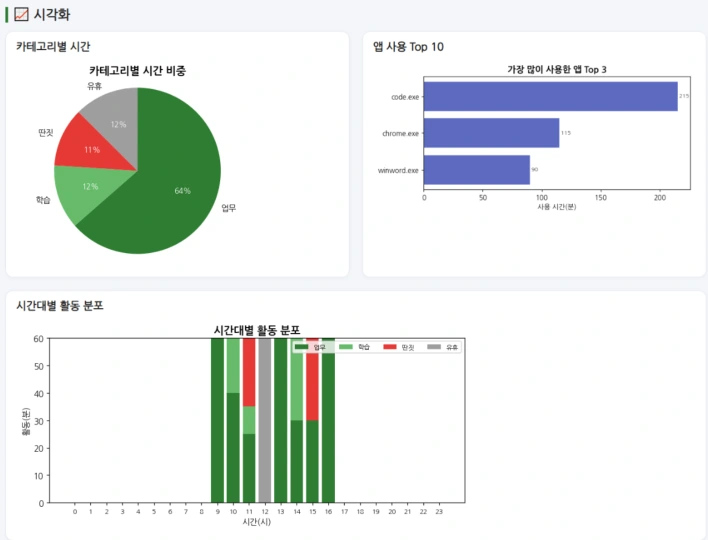

이전 교과목 「생성형 AI의 이해와 활용」에서 진행한 프로젝트를 소개합니다. 주제와 접근 방법을 살펴보며 자신의 프로젝트 아이디어를 구체화해 보세요.These are projects from the previous course, 「Understanding and Using Generative AI」. Browse the topics and approaches to help shape your own project idea.
이전 교과목 프로젝트Projects from the Previous Course
17 PROJECTS
01
PROJECT 01 / 금융 · 시나리오 분석PROJECT 01 / Finance · Scenario Analysis
지정학적 사건의 과거 사례를 비교해 강세·중립·약세 시나리오와 주요 리스크를 제시합니다.Compares past cases of geopolitical events to present bullish, neutral, and bearish scenarios along with key risks.
프로젝트 자세히 보기 View project details →

생산성 리포트의 활동 시각화 · 보고서Activity visualization in the productivity report · report
PC 활동을 업무·학습 등으로 분류하고, 집중도 리포트와 알림으로 시간 관리를 돕습니다.Classifies PC activity into work, study, and other categories, and supports time management with focus reports and notifications.
프로젝트 자세히 보기 View project details →
마음친구 서비스 화면 · 발표자료Maeum Chingu service screen · presentation slides
PROJECT 03 / 일상 · 대화형 AIPROJECT 03 / Everyday Life · Conversational AI
감성 대화 데이터를 참고해 대화와 감정 기록을 지원하고, 위험 표현에는 도움 정보를 안내합니다.Supports conversation and emotion journaling informed by emotional dialogue data, and provides help information in response to risk-related expressions.
프로젝트 자세히 보기 View project details →
AI로 제작한 홍보물 예시 · 보고서Example AI-generated promotional material · report
PROJECT 04 / 비즈니스 · 리뷰 분석PROJECT 04 / Business · Review Analysis
주변 업체의 리뷰 수집부터 마케팅 전략 수립과 홍보물 생성까지 연결하는 서비스를 만듭니다.Builds a service that connects review collection from nearby businesses to marketing strategy development and promotional material generation.
프로젝트 자세히 보기 View project details →
여행 추천 서비스 화면 · 보고서Travel recommendation service screen · report
PROJECT 05 / 여행 · 추천과 기록PROJECT 05 / Travel · Recommendations and Journaling
AI 여행 추천과 사진의 GPS 정보를 활용해 여행 계획·사진 정리·일기 작성을 연결합니다.Uses AI travel recommendations and photo GPS data to connect trip planning, photo organization, and journal writing.
프로젝트 자세히 보기 View project details →
지원금 신청 로드맵 · 사업계획서Subsidy application roadmap · business plan
PROJECT 06 / 공공데이터 · 맞춤 추천PROJECT 06 / Public Data · Personalized Recommendation
업종·지역 등 매장 조건에 맞는 지원사업을 찾아, 쉬운 공고 요약과 신청 로드맵을 제공합니다.Finds support programs matching store conditions such as industry and region, and provides plain-language announcement summaries and an application roadmap.
프로젝트 자세히 보기 View project details →
세무 상황 선택 화면 · 보고서Tax situation selection screen · report
PROJECT 07 / 생활 정보 · 검색 기반 AIPROJECT 07 / Everyday Information · Retrieval-Based AI
청년층의 소득·세무 상황을 정리하고, 공공자료를 바탕으로 준비할 서류와 다음 행동을 안내합니다.Organizes young people's income and tax situations and, drawing on public resources, guides them on the documents to prepare and the next steps.
프로젝트 자세히 보기 View project details →
역사 단편 영화의 장면 · 보고서Scene from the historical short film · report
PROJECT 08 / 역사 · 영상 제작PROJECT 08 / History · Video Production
제2차 포에니 전쟁의 주요 장면을 AI 이미지·영상·음성으로 재현한 역사 단편 영화를 제작합니다.Produces a historical short film recreating key scenes of the Second Punic War with AI-generated images, video, and voice.
참여 학과Participating department
아트&테크놀로지Art & Technology
프로젝트 자세히 보기 View project details →
09
PROJECT 09 / 교육 · 강의 정보 검색PROJECT 09 / Education · Course Information Search
교과목 정보와 강의평을 결합해, 학생의 선호와 이수 조건에 맞는 시간표와 강의를 추천합니다.Combines course information and course reviews to recommend timetables and courses that fit the student's preferences and graduation requirements.
프로젝트 자세히 보기 View project details →
10
PROJECT 10 / 교육 · 검색 증강 생성PROJECT 10 / Education · Retrieval-Augmented Generation
미적분 교재와 기출문제를 바탕으로 개념 설명, 단계별 힌트, 유사 문제 생성을 지원합니다.Supports concept explanations, step-by-step hints, and similar problem generation based on calculus textbooks and past exam questions.
프로젝트 자세히 보기 View project details →
Bounce Sogang 실행 화면 · 보고서Bounce Sogang in action · report
PROJECT 11 / 게임 · AI 활용 개발PROJECT 11 / Games · AI-Assisted Development
생성형 AI와 함께 웹 게임을 개발하고, 사용자가 직접 맵을 만들고 저장해 플레이하도록 확장합니다.Develops a web game with generative AI and extends it so users can build, save, and play their own maps.
연속 이미지에서 공의 위치를 추출하고, 머신러닝과 고전역학을 결합해 미래 궤적을 예측합니다.Extracts the ball's position from consecutive images and combines machine learning with classical mechanics to predict its future trajectory.
프로젝트 자세히 보기 View project details →
13
PROJECT 13 / 스토리텔링 · 영상 제작PROJECT 13 / Storytelling · Video Production
잘못된 대학생활 습관을 반전 서사로 풀어내며, AI로 대본을 구상하고 영상과 음성을 제작합니다.Tells a story with a twist about bad college-life habits, using AI to develop the script and produce the video and voice.
프로젝트 자세히 보기 View project details →
심화 변조 뉴스 판별 결과 · 발표자료Detection results on advanced altered news · presentation slides
PROJECT 14 / 자연어 처리 · 모델 비교PROJECT 14 / Natural Language Processing · Model Comparison
실제·변조 뉴스로 판별 모델을 비교하고, 정교하게 왜곡된 기사에서 드러나는 탐지의 한계를 분석합니다.Compares detection models on real and altered news and analyzes the limits of detection revealed by subtly distorted articles.
프로젝트 자세히 보기 View project details →
댓글 감성과 주가 방향의 관계 · 발표자료Relationship between comment sentiment and stock price direction · presentation slides
PROJECT 15 / 텍스트 마이닝 · 감성분석PROJECT 15 / Text Mining · Sentiment Analysis
증권 댓글 감성과 주가 방향의 관계를 분석합니다. 표본에서는 통계적 유의성이 확인되지 않았습니다.Analyzes the relationship between stock-forum comment sentiment and stock price direction. No statistical significance was found in the sample.
프로젝트 자세히 보기 View project details →
16
PROJECT 16 / 교육 · 학습 계획PROJECT 16 / Education · Study Planning
시험 일정에 맞춰 회독 계획을 설계·재조정하고, 업로드한 수업 자료로 예상 문제를 생성합니다.Designs and readjusts review plans around the exam schedule, and generates practice questions from uploaded course materials.
프로젝트 자세히 보기 View project details →
히마와리 위성 관측값 시각화 · 보고서 Fig. 1Visualization of Himawari satellite observations · report Fig. 1
PROJECT 17 / 위성 데이터 · 머신러닝PROJECT 17 / Satellite Data · Machine Learning
위성의 적외선 관측값과 화점 자료를 결합해, LightGBM 기반 산불 감지 모델을 개발합니다.Combines satellite infrared observations with fire point data to develop a LightGBM-based wildfire detection model.
프로젝트 자세히 보기 View project details →
프로젝트 설명과 그림은 제출된 보고서 및 발표자료를 바탕으로 정리했습니다. 참여 학과는 자료에서 확인되는 경우에만 표시합니다.Project descriptions and figures are compiled from the submitted reports and presentation slides. Participating departments are shown only when identifiable in the materials.